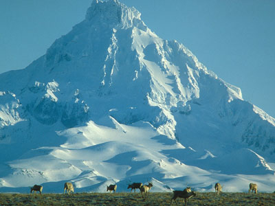
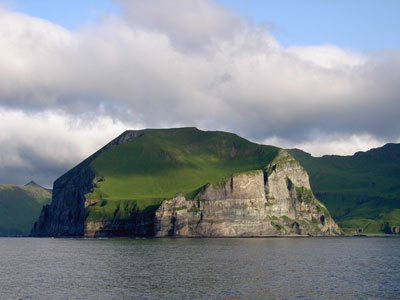
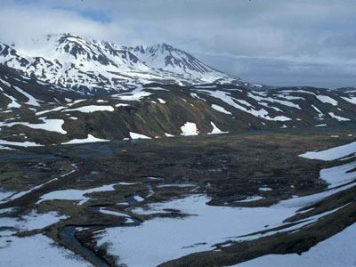
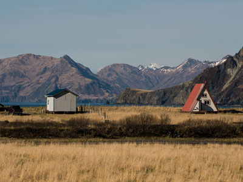
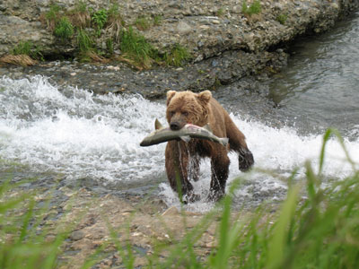

.jpg){kind=link}
Alaska Peninsula and Aleutian Islands Travel Guide
Peninsula extending about 800 km (497 mi) to the southwest from the mainland of Alaska and ending in the Aleutian Islands, separating the Pacific Ocean from Bristol Bay, an arm of the Bering Sea
Places to See in Alaska Peninsula and Aleutian Islands

Sarvis, John, Public domain, via Wikimedia Commons; Image Size Adjusted

Alaska Maritime National Wildlife Refuge
Wildlife refuge comprising 2,400 islands, headlands, rocks, islets, spires and reefs in Alaska, featuring diverse landforms and terrains, including tundra, rainforest, cliffs, volcanoes, beaches, lakes, and streams

U.S Fish and Wildlife Service, Public domain, via Wikimedia Commons; Image Size Adjusted

Aleutian Islands
Chain of 14 large volcanic islands and 55 smaller islands that form part of the Aleutian Arc in the Northern Pacific Ocean, extending about 1,200 mi (1,900 km) westward from the Alaska Peninsula toward the Kamchatka Peninsula in Russia

Sekora, U.S. Fish and Wildlife Service, Public domain, via Wikimedia Commons; Image Size Adjusted

Attu Island
Island part of the Aleutian Islands chain is the westernmost point of Alaska, the site of the only World War II land battle fought in the United States and an important location in the world of competitive birding

Captain Budd Christman, NOAA Corps, Public domain, via Wikimedia Commons; Image Size Adjusted

Katmai National Park and Preserve
National park and preserve in southwest Alaska, notable for the Valley of Ten Thousand Smokes and for its brown bears

U.S. Department of Energy (official Flickr account), Public domain, via Wikimedia Commons; Image Size Adjusted

Kodiak Island Archipelago
Group of islands south of the main land-mass of Alaska including Kodiak Island, the second-largest island in the United States

James JonesResearch GeologistUSGS, Alaska Science Centerjvjones@usgs.gov, Public domain, via Wikimedia Commons; Cropped and Image Size Adjusted
Lake Clark National Park and Preserve
Park includes many streams and lakes vital to the Bristol Bay salmon fishery, including its namesake Lake Clark, and protects rainforests along the coastline of Cook Inlet, alpine tundra, glaciers, glacial lakes, and two volcanoes

Mark Wipfli, Alaska Cooperative Fish and Wildlife Research Unit. Public domain., Public domain, via Wikimedia Commons; Image Size Adjusted

McNeil River State Game Sanctuary and Refuge
River on the eastern drainage of the Alaska Peninsula emerging from glaciers and alpine lakes in the mountains of the Aleutian Range is the prime habitat famous for its salmon and brown bears

Piergiuliano Chesi, CC BY-SA 3.0, via Wikimedia Commons; Image Size Adjusted

Unalaska
Volcanic island in the Aleutian Islands in Alaska with the city of Unalaska, Alaska, covering part of the island and all of neighboring Amaknak Island where the Port of Dutch Harbor is located
Overview
The Alaska Peninsula extends about 500 miles southwest from the mainland and ends in the Aleutian Islands, separating the Pacific from Bristol Bay and the Bering Sea. It is one of the most remote and volcanic parts of the United States, and visitors come for world-class brown bear viewing, wild coastlines, fishing, and history.
Highlights include Katmai National Park and Brooks Falls, Lake Clark National Park, the Aleutian Islands, and the Kodiak Archipelago. Roads are few, and most travel is by air or on the Alaska Marine Highway.
Geography
The peninsula is a spine of the Aleutian Range, a chain of active volcanoes that is part of the Pacific Ring of Fire. Mount Veniaminof, Pavlof, and Shishaldin are among the most active, and more than 40 volcanoes in the Aleutian arc have erupted in historic times. The Aleutian Islands continue the arc about 1,100 miles into the Pacific. The climate is cool, windy, and wet, with frequent fog and storms, and the treeless landscape is dominated by tundra, lakes, and rugged coastline.
History
The Unangax̂ (Aleut) and Alutiiq peoples have lived on the peninsula and islands for thousands of years. Russian fur traders arrived in the 1740s, and the Russian-American Company founded its first permanent settlement at Three Saints Bay on Kodiak in 1784. The United States purchased Alaska in 1867. In June 1912, the eruption of Novarupta, the largest of the 20th century, created the Valley of Ten Thousand Smokes. During World War II, Japan bombed Dutch Harbor and occupied Attu and Kiska in 1942, and the Battle of Attu in 1943 was the only land battle fought on North American soil during the war.
Cities and Towns
Communities are small and spread out. King Salmon is the gateway to Katmai, and Cold Bay, Sand Point, and King Cove are fishing and transportation hubs. Unalaska and Dutch Harbor make up one of the busiest fishing ports in the United States, and Kodiak is the largest town on the Kodiak Archipelago.
National Protected Areas
Katmai National Park and Preserve is famous for brown bears fishing at Brooks Falls and for the Valley of Ten Thousand Smokes. Lake Clark National Park and Preserve has volcanoes, glaciers, and turquoise lakes, and Aniakchak National Monument and Preserve protects a six-mile-wide caldera. The Alaska Maritime National Wildlife Refuge protects seabird colonies across the Aleutians, and Izembek and Becharof national wildlife refuges protect lagoons and bear habitat. The Aleutian World War II National Historic Area preserves sites on Unalaska.
State Parks and Historic Sites
McNeil River State Game Sanctuary and Refuge is known for brown bear viewing by permit lottery. On Kodiak, Fort Abercrombie State Historical Park preserves a World War II coastal defense site, and Buskin River and Pasagshak River state recreation sites offer fishing and camping. The Church of the Holy Ascension in Unalaska, a National Historic Landmark built in the 1890s, is one of the oldest Russian Orthodox churches in Alaska.
Seasons and Best Time to Visit
Summer, from June through September, is the main travel season, when the weather is mildest, though fog, wind, and rain are common year-round. Bears gather at Brooks Falls for the sockeye run in July, and again in September, which is when Katmai’s “Fat Bear Week” attracts online viewers. Fishing for salmon and halibut peaks in summer, and the Aleutians are a top spot for birding in June. Winters are stormy and dark, with limited flights and ferry service.
This article uses material from the Wikipedia article "Alaska Peninsula", which is released under the Creative Commons Attribution-Share-Alike License 3.0. Additional information is from the National Park Service pages for Katmai National Park and Preserve, Lake Clark National Park and Preserve, and Aniakchak National Monument and Preserve, the U.S. Fish and Wildlife Service Alaska Maritime National Wildlife Refuge page, and Alaska State Parks.